2025年8月
广播发布后不可编辑，所以每条都是那一刻的原话。
2025-08-31 23:32:26
看过 死神来了：血脉诅咒 / Final Destination: Bloodlines ★★★★☆
依托最新的技术做出的逼真的死亡效果教我胆战心惊，我就不该在晚上将睡觉的时候看这部电影。一寸光阴一寸金，就是结尾太潦草了些。
2025-08-30 16:11:20
看过 坏蛋联盟2 / The Bad Guys 2 ★★★★☆
所以胖东来为有犯罪前科人员留有岗位真的是很目光长远了。蛇哥被搓成气球的时候我要笑死了。Diane与狼仔的纠缠真有意思，我活着就是为了看他们的接吻。不知不觉就变成了福瑞控，尤其穿着黑高跟西装裤白衬衫的狐狸。小豚鼠怎么还苟着，难道有第三部的计划么。狼仔好喜欢不合时宜的meta哦，只是这次的开头没有抢掉小孩的钓鱼杆，看来的确变好人了。
2025-08-30 11:06:48
 读过 莎士比亚十四行诗 ★★★★☆
读过 莎士比亚十四行诗 ★★★★☆
在多抓鱼淘到的宝贝，成色很不错。之后又买了一本同版本的新书送给了杨青。莎翁的诗真迷人。（2025, 8, 30，喜欢第一十二、一十八、一十九、二十三、二十八、二十九、四十九、五十、五十四、六十一、六十六、七十六、八十七、九十四、九十七、一百零四、一百一十三、一百四十五、一百四十七、一百五十二号诗。KaLi Blue是不是化用的一百一十三号诗，或者说是灵感的来源。屠老师的文笔真老派，读出来有韵律。）
2025-08-28 15:56:14
看过 坏蛋联盟 / The Bad Guys ★★★★☆
大狐狸和大坏狼的眉眼之间充满甜蜜，这种对弈也太好磕了吧。Diane好迷人哦。所以人性本善啊，只是这押送车真的没人偷听么。
2025-08-28 15:53:15
2025-08-27 18:52:29
看过 锦月如歌 ★★☆☆☆
没必要为了捧自己的先进就将其他女性角色写得很傻。居然还有牛头人剧情，哈哈。陪老妈一起看的。
2025-08-26 17:57:03
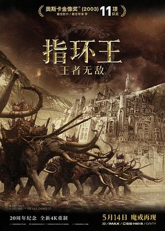
战争场面宏大，但是动作并不上镜。看到蠢队友做傻事真是无比窒息。Tom就是我的神，他说的“别去我不能陪你一起去的地方。”时，我泪目。咕噜真可怜。
2025-08-25 17:34:48
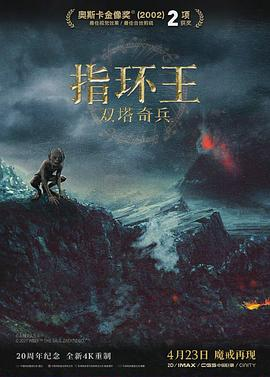
Tom真是好园丁，Frodo身上背负的太沉重了，那不该他一个人承受的。多线叙事层次鲜明，战斗场面在那时应当是顶尖水平了吧。
2025-08-25 10:27:05
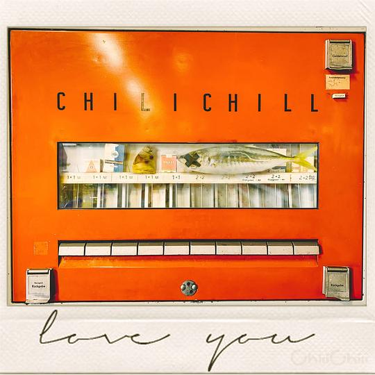
对苏轼词句的化用教人拍案叫绝。
2025-08-25 10:21:30
 读过 日常 11 ★★★★☆
读过 日常 11 ★★★★☆
恭喜重开呀。
2025-08-25 10:19:57
 读过 日常:1-2 ★★★★★
读过 日常:1-2 ★★★★★
除了短篇二里有个作画失误，其余都太完美了。包袱到如今依旧能让我开怀大笑。赠送的贴纸好玩捏。
2025-08-24 17:03:40
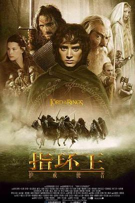
猪队友真要命，但蠢不是坏，没办法。好奇大小人是怎么拍出来的。矮人的设定到现在都没变过。宏大的开篇，节奏合理且适中。
2025-08-24 13:43:30
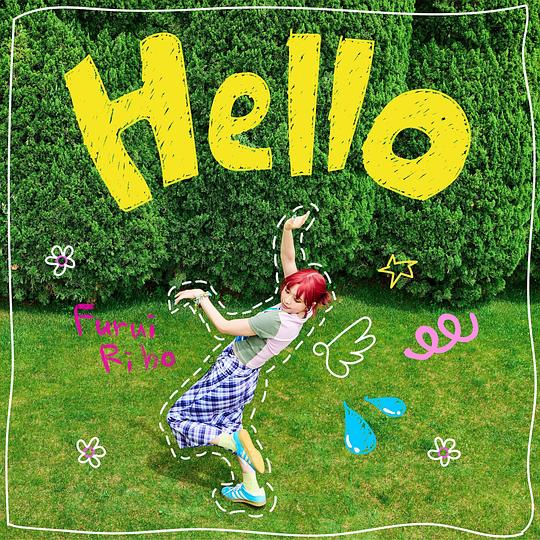
好听。编曲很悦耳。
2025-08-24 13:40:14
看过 花样年华2001 / 花樣年華2001 ★★★★☆
《花样年华》上映的彩蛋。美术风格浓烈，淡雅的蓝色盈满画幅。
2025-08-23 18:42:51
看过 爱上海军蓝 ★★★☆☆
陪老妈一起看到婚礼大结局，为什么主角这一对不用集体举办婚礼呢。说起来伍肆能救小唐两次也太离谱了。
2025-08-22 16:49:02
看过 史密斯夫妇 / Mr. & Mrs. Smith ★★★★☆
开头的访谈令人眼前一亮，但故事仍然套路，最后夫妻俩一起与更坏的坏人决斗。皮特真帅呀，眼神里都是戏。
2025-08-22 11:16:04
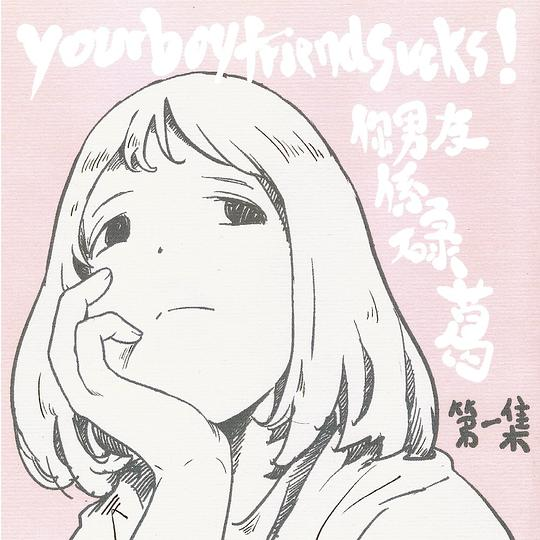
《白鹤》太感伤了。《波兰首都是上海》真是暗恋的极致。
2025-08-21 17:06:38
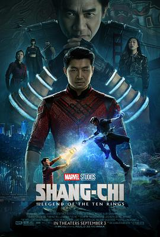
公交车上的打斗比较出彩，但特效用得很平庸。老梁为什么要接这部戏。
2025-08-21 11:18:27
看过 极限挑战 第一季 ★★★★☆
当时真以为黄磊是真聪明，现在再看发现表演痕迹还蛮浓的。
2025-08-18 18:27:19
看过 保你平安 ★★★★☆
大鹏总是喜欢将社会议题塞进喜剧里再其讽刺，不过这部他不仅演得好，导得也不错。父亲与女儿为了真相而发生的双线叙事穿插得很得体。《世界第一等》真好听。白马是赤裸裸的世界里奇幻的意象，它出现时我瞪大了眼睛，实在惊叹这匹白马。平安哥从传说中的为兄弟蹲大牢再到实际为真相跑进局子里，真是个好人。
2025-08-16 17:29:26
看过 捕风追影 ★★★★☆
好看的，没想到木凳龙叔限时返场。武戏顶，剧情较合格，没想到跟紧时代警方也用上了大模型。辉叔的那声狼吠使人满起鸡皮疙瘩。张子枫暑期二杀。和老妈一起看的电影。
2025-08-15 18:06:33
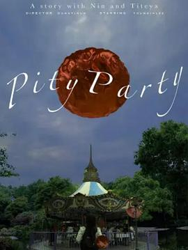
很别具一格的镜头语言与视觉符号。使用了三个经典比例组合而成的超宽幅画面让人目不暇接。
2025-08-15 17:24:30
 看过 热烈 ★★★★☆
看过 热烈 ★★★★☆
实话说比《荔枝》更好一点，毕竟《荔枝》是有原作打底的。但这部也有很多不足，甚至开头就出现了拍摄失误。不过节奏上大鹏也展现了自己的能力，起飞并稳稳落地。中间在酒吧的梦幻蒙太奇教人印象深刻。刘姨唱歌的时候让我好感动哦。王一博究竟是可取的么，是程耳原来没有调教演员的能力还是王一博本色出演或者说大鹏善于变通。
2025-08-15 13:55:59
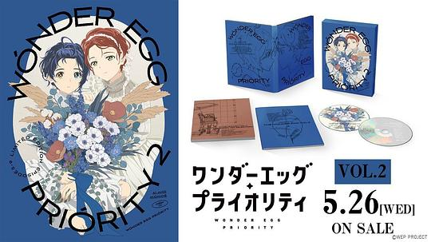
喜欢第二十四《new world》，电子乐的鼓点真动听。
2025-08-15 13:55:15
在听 TVアニメ「ワンダーエッグ・プライオリティ」オリジナル・サウンドトラック Vol. 1 ★★★★☆
喜欢第十四《brand-new world》。
2025-08-15 13:54:11
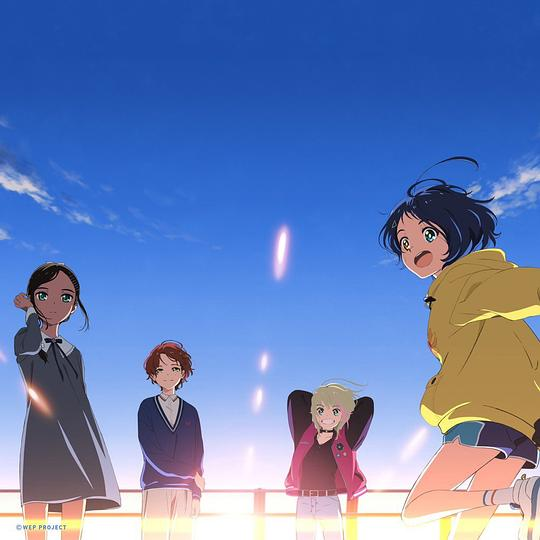
和《日常》的那版有得一拼。
2025-08-15 13:52:22
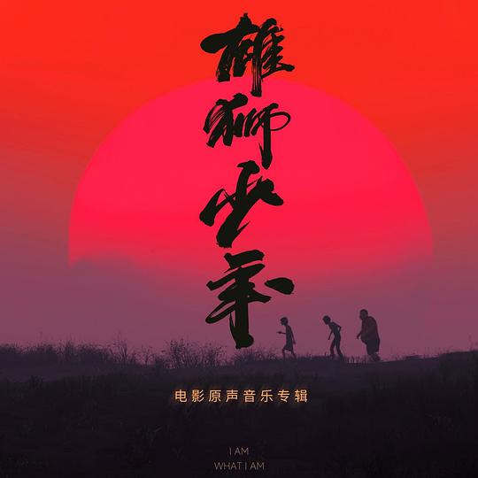
喜欢《纸飞机》。
2025-08-14 15:53:52
看过 飓风营救 / Taken ★★★★☆
没想到意外精彩，节奏正好剧情也没有槽点。“为了她我都能掀翻埃菲尔铁塔。”这句话说出来真令人安心。编剧居然有贝松。
2025-08-13 16:50:33
看过 你的颜色 / きみの色 ★★★☆☆
山田总是试图在大的无法的更改的环境里探讨忏悔的问题，但是这部里宗教的设置有些不明所以了。同时她导下镜头的变焦居然有人触摸的感觉。
2025-08-13 16:45:25
看过 你的颜色 / きみの色 ★★★☆☆
山田总是试图在大的无法的更改的环境里探讨忏悔的问题，但是这部里宗教的设置有些不明所以了。同时她导下镜头的变焦居然有人触摸的感觉。
2025-08-13 12:42:01
看过 神秘世界历险记3 ★★★☆☆
王雨果你怎么越来越闹腾了。
2025-08-13 12:41:10
看过 神秘世界历险记2 ★★★☆☆
那时候还是通过卫星锅来观看的。虽然如今发现故事平平无奇，但当时的自己笑得很开心看得很入迷。
2025-08-13 12:39:21
看过 神秘世界历险记 ★★★★☆
在电影院里看到这张海报，陡然想起来小时候的自己曾真挚地追过这三部曲。那时候好向往能跑进这神秘世界里逛一逛。
2025-08-12 16:00:20
看过 落水狗 / Reservoir Dogs ★★★★★
非线性叙事初见端倪，这里只有硬汉柔情与夹杂在话语里的色情玩笑。
2025-08-10 15:49:21
看过 破坏之王 / 破壞之王 ★★★☆☆
打卡名场面“在座的各位都是垃圾。”实际上里面的好多包袱现在看来有些尬了。一个下午和老妈一起看的。
2025-08-10 11:05:54
看过 白夜玲珑 ★★★☆☆
以前的时候看过，当时觉得制作勉强能看，不知不觉就追了下去。
2025-08-10 00:24:39
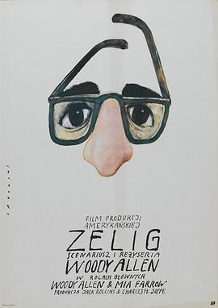
到头来反而像是一场社会大实验。伍迪很巧妙地将西力的经历与历史大事件串联起来，再结合所谓专家或当事人的描述，使得伪纪录片看上去很真很真。中间心理催眠的戏有点像《堤》的表现手法。黑白画面好容易令人犯困哦。
2025-08-10 00:21:57
看过 岁岁年年柿柿红 ★★☆☆☆
小时候和奶奶一起看的，当时便觉得车祸那场戏拍得是真烂啊。男主居然还是导演，导演居然更是王阿姨的老公。
2025-08-08 22:16:00
看过 去唱卡拉OK吧！ / カラオケ行こ! ★★★★☆
山下也很会拍大叔与正太的故事嘛，但这里的黑社会倒是将温暖的一面无限放大了，将恶的产生归结成了毒品的作用。究竟不是纪实作品，到底是喜剧片，但是一部很合格的电影了。剧情不仅完整保留了漫画的大纲，还原创了一些。当小孩开始唱《红》时一阵掌声的平行蒙太奇让我印象深刻。最后大叔真将喜欢的人的名字绣在手臂上了。
2025-08-07 22:38:31
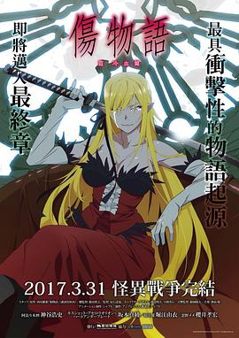
这么一看他们的关系真是扭曲呢。中间有一段无聊的色情戏，若有若无地烘托出班长的善良。
2025-08-07 11:56:48
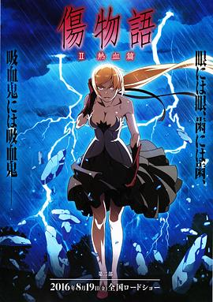
开头的对打不再像第一部那样违和了。班长抚摸垃圾君腹肌的样子好工口哦。稻草戏里班长是真动情了，同时也就是事实上她也是垃圾君的真正意义上的救命恩人，那晚路口边班长伸出却抓不住的手让我无比慨叹战场原只是运气好罢了。最后果然人类才是最不像人的，尽出些下三滥的手段。小忍可爱捏。
2025-08-06 22:35:32
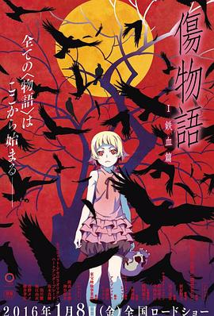
一开头就是诡异的开场。空无一人的街道充满了新房的风格。班长真是好人哦。
2025-08-02 23:34:36
 读过 タコピーの原罪 下 ★★★☆☆
读过 タコピーの原罪 下 ★★★☆☆
结尾差强人意。大人过去犯的错以后永远弥补不了。
2025-08-02 23:33:51
 读过 タコピーの原罪 上 ★★★★☆
读过 タコピーの原罪 上 ★★★★☆
没火之前就看了，一开始真以为是什么章鱼版哆啦A梦，但越往后看越难受。